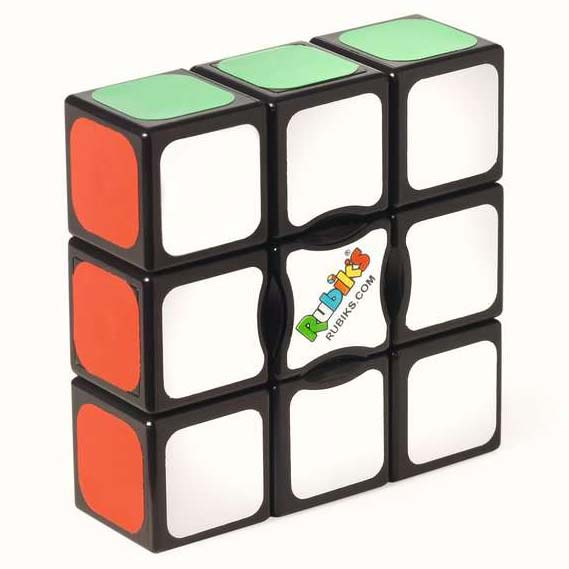
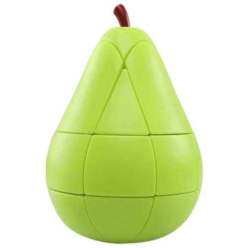
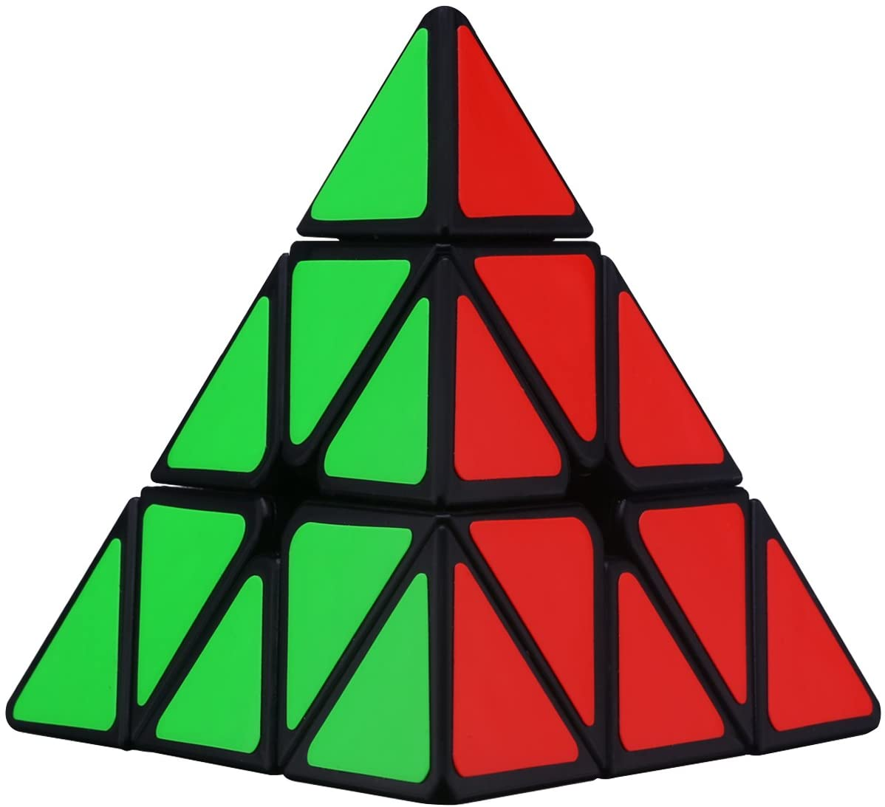
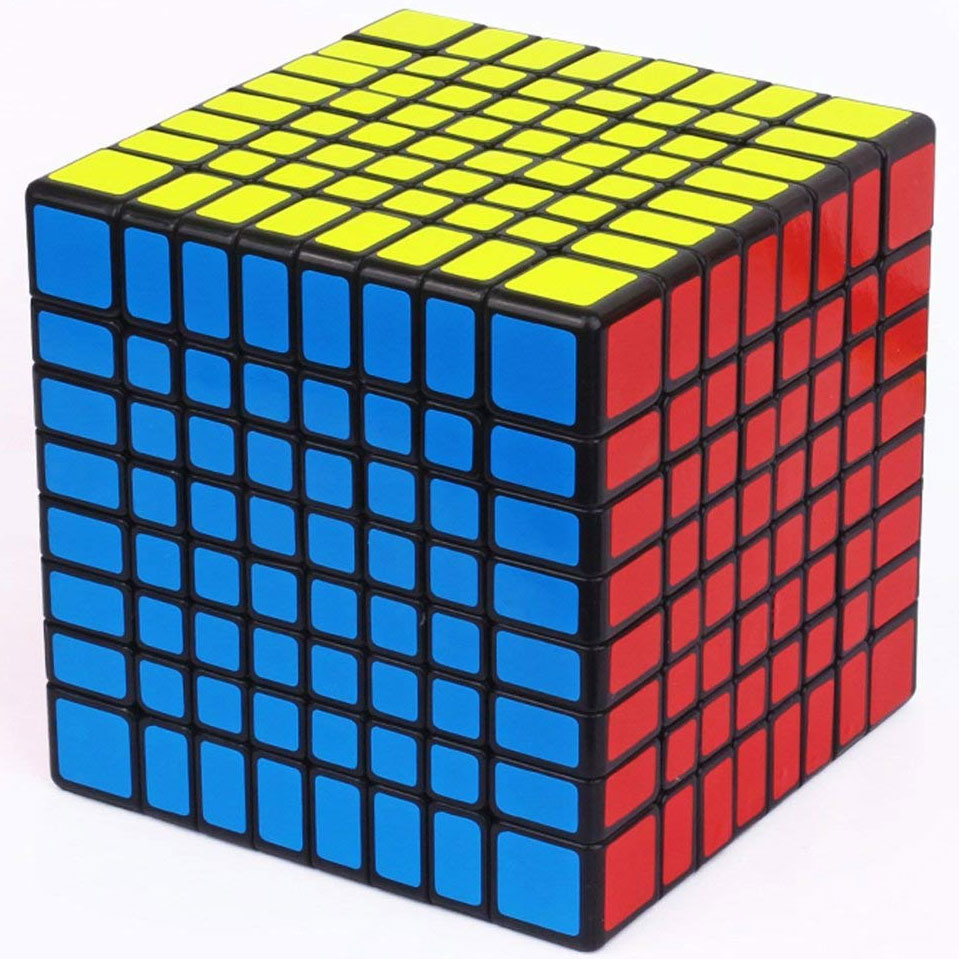
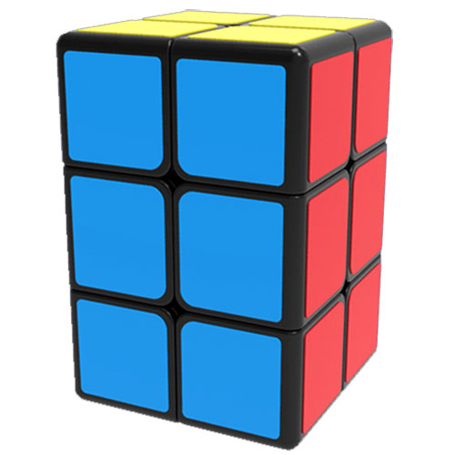
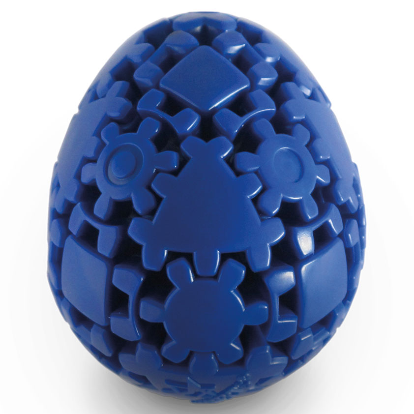
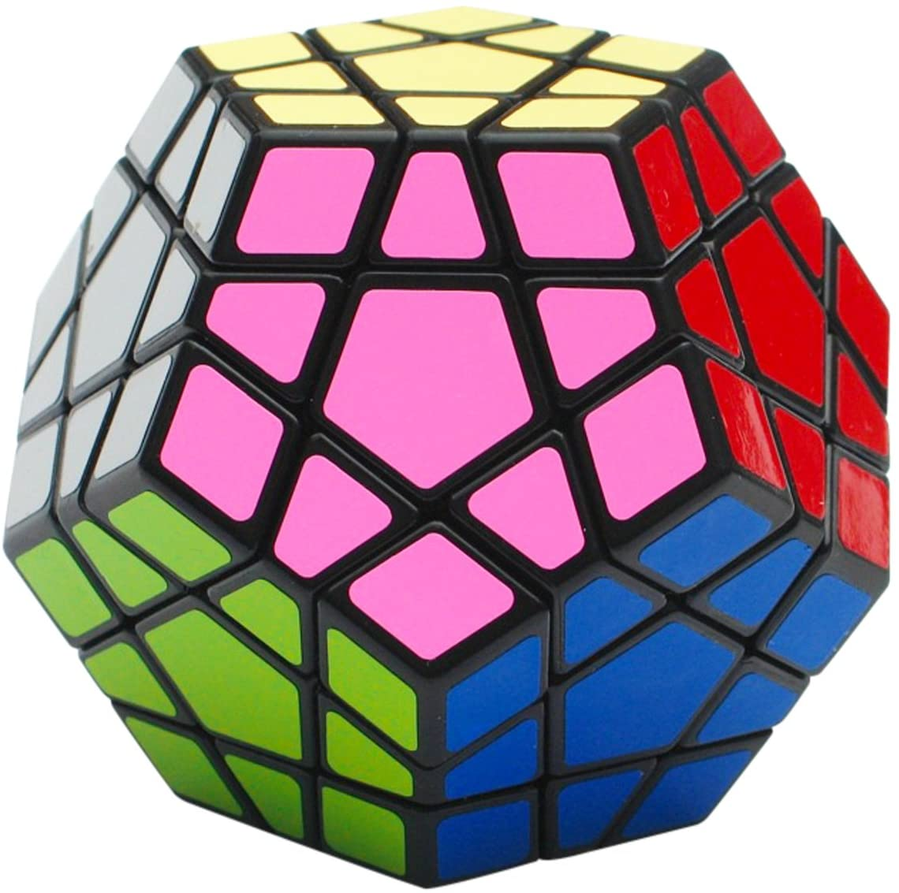

Arten von Zauberwürfeln
Viele kennen den standardmäßigen 3x3x3 Würfel. Neben dieser recht einfachen Form gibt es noch einige weitere, die sich grob in die Kategorien:
- Quadratische
- Unregelmäßige
- Formrätsel
- Nicht quadratische
einteilen lassen. Einige von diesen werden hier kurz vorgestellt.
| Quadratische | Unregelmäßig | Formrätsel | Nicht quadratisch |
|---|---|---|---|
|
"Normale" Zauberwürfel, die sich beliebig vergrößern lassen. |
Die Unregelmäßigkeit dieser Würfel führt beim Lösen zu einer
Veränderung der Form. |
Bei dieser Art des Zauberwürfels geht es nicht um das Sortieren
der Farben, |
Zauberwürfel müssen nicht unbedingt 6-seitige Würfel sein, |

Shopseite |

Shopseite |

Shopseite |

Shopseite |
|

Shopseite |

Shopseite |

Shopseite |

Shopseite |